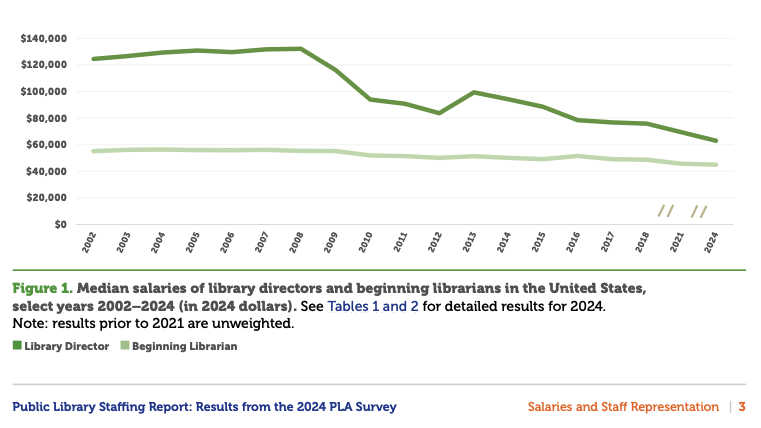
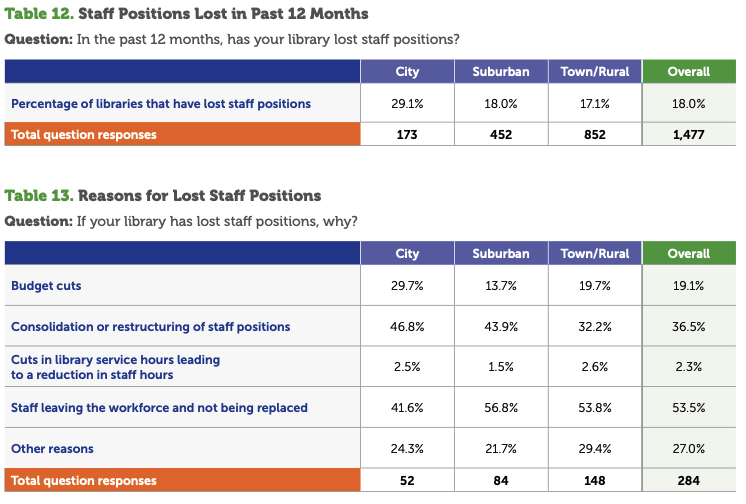
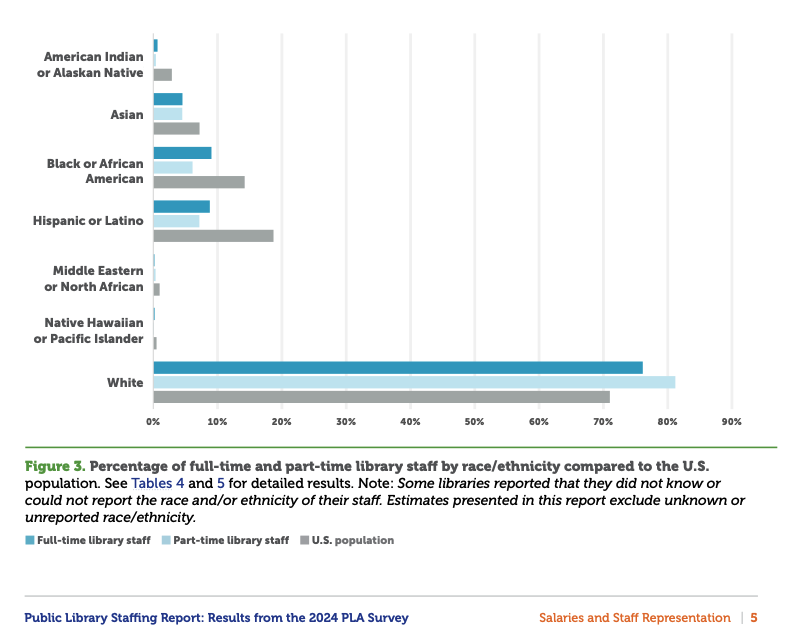

The fields of librarianship and archival work are growing, but slowly.
The Bureau of Labor Statistics reports a 2% projected employment increase for library and library media specialists and a 6% projected employment increase for archivists during the 2023–2024 year, in comparison to all U.S. jobs, where the average is a 3% increase. The Bureau also notes that although growth is slow, 13,500 jobs are projected to open each year for librarians due to retirement vacancies.
The Public Library Association (PLA) conducted a 2024 voluntary survey, in which out of all 9,226 public libraries, 1,478 public libraries chose to participate. Questions were posed regarding wages, diversity, retention, and accessibility. Results were weighted to account for responsiveness. To account for trends over time, PLA used 2002–2018 data from the Public Library Data Service (PLDS) Survey. Results are also adjusted for inflation.
Key Takeaways:
Job classifications are also an area that MLIS students should be aware of when entering the field. Public librarianship is classified as a municipal job or “civil service,” meaning you are employed by the local government and eligible to be represented by the American Federation of State, County, and Municipal Employees (AFSCME Local 2626). Being a part of a union affords you protections for workplace rights, negotiated wages, as well as pension and healthcare. Archivists, on the other hand, are typically hired on a contractual basis, and often for wages less than that of a public librarian. For this to change, archivists would have to be added to the civil service classification, an endeavor which would require advocacy from senior leadership, such as library directors and senior librarians.


